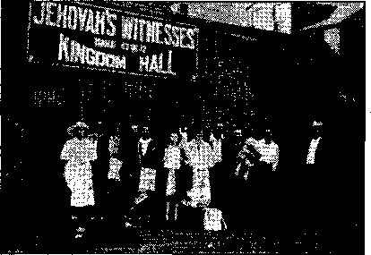
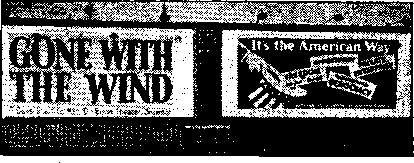

The “New Order” in Europe (Part 4)
“The Duee Is Always Right (!)” - -
When Mussolini’s Bluff Was Called
British Comment
Counsel by J. F. Rutherford
Magazine Work at Bakersfield, California
The New Government
Sheriff Stopped, but Not-the Work
Under the Totalitarian Flag
Prisoners of War at the Vatican
Published every other Wednesday by
WATCHTOWER BIBLE AND TRACT SOCIETY, INC.
117 Adams St., Brooklyn, N. Y-, U, S. A.
Editor Clayton J, Woodworth
Business Manager Nathan If. Knorr
" Five Cents a Copy
?1 a year in the United States
$1.25 to Canada and all other countries
NOTICE TO SUBSCRIBERS.
Remittances: For your own safety, remit by postal or express money order. When coin or currency is lost in the ordinary mails, there is no redress, Remittances from countries other than those named below may be made to the Brooklyn office, but only by International postal money order
Receipt of a new or renewal subscription will be ac* knowledg-ed only when requested. Notice of Expiration is sent with the journal one month before subscription expires. Please renew promptly to avoid loss of copies. Send change of address direct to us rather than to the post office. Tour request should reach us at least two weeks before the date of issue with which it is to take effect. Send your old as well as the new address. Copies will not be forwarded by the post office to your now address unless extra postage is provided by you.
Published also in Afrikaans, Bohemian. Danish, Dutch, Finnish, French, German. Greek, Hungarian, Japanese, Norwegian, Polish, Portuguese, Spanish, Swedish, Ukrainian; also special Australian edition in English.
OFFICES FOR OTHER COUNTRIES
England 24 Craven Terrace, London, W. 2
Canada 40 Trwin Avenue, Toronto 5, Ontario Australia 7 Beresford Road, Strathfield, N S W. South Africa 623 Boston House, Cape Town
Entered as second-class matter at Brooklyn, N. Y.r under the Act of March 3, 1S79.
Spain—The “New Order" Proving Ground ♦ Ambrose Hatti, otherwise known as Pope Pius 'XL was one of the most vicious, hard-hearted, cruel men that ever lived, and well deserves the everlasting destruction into which he went at death. After lending all his powers to the conquest of Ethiopia, he conspired with Mussolini and Hitler to destroy the Spanish Republic, in which destruction he was ably assisted by the governments of Britain and the United States.
The traitor and rebel Franco was lauded to the skies, and was hardly secure in his job when he was plotting for the repossession of Gibraltar, the recapture of which, he says, “is a Spanish mission.” This would have the pope’s approval. The disintegration of the British Commonwealth of Nations is an integral part of the scheme of the “new order”.
Franco the Butcher, sometimes known as Franco the Baby-Killer, is one of the most highly honored men of the “new order”. He awarded prizes to outstanding Americans who helped him put over his villainous and murderous treachery against the Spanish Republic. One so honored was Bible-burning Denis J. Cardinal Dougherty, of Philadelphia. Since the Spanish war ended, even the Catholic papers admit among themselves that they lied unmercifully in order to , help Franco gain his unworthy objectives.
Spain was a training ground for the “new order” statesmen. There they saw how best to destroy a city; Guernica, for example. A full year after the war closed three-fourths of the children who had been bombed were still suffering from nervous shock. But the nobles and the clergy had to regain their saddles on the backs of the common people at all costs. What the Spanish people needed, so American spokesmen said, was “more religion”. They got it when Franco won the war. _
“And in His name shall the nations hope.”—Matthew 12:21, A.R.V.
VclumoXXIl Brooklyn, N. Y., Wednesday, May 14, 1941 . Number 653
The “New Order” in Europe (In Foqr Parts—Part 4)
IN 45 days’ fighting in the spring of
1940 there were 80,000 French soldiers slain, 120,000 wounded, and 20,000 are missing. It is claimed that 130 of the 234 French generals were captured and that 30 percent to 35 percent of the French dead and wounded were officers.
The Vichy government announces that the only education allowed young women , henceforth will be “courses in child rearing, so that all women must return to their primary and traditional mission, which is to belong to the hearth, to have children, to raise them, and to live only to see that they become strong and useful men and women”.
All the world is engaged in shoving the youth around as they please. A dispatch from Vichy mentions that 80,000 French youth were sent to the Alps and national forests of France for eight months’ service.
Says the 1941 Yearbook of Jehovah's witnesses: “It is now quite manifest that France is entirely in the hands of the Hierarchy. Shortly after the outbreak of the war in September, 1939, the editor of a humanistic paper in Paris stated to a representative of our Society: ‘Now already there are a number of prominent statesmen who see with apprehension that the Hierarchy in France has even now grasped all the powers of government, and that any resistance against this influence is impossible.’ ”
The “Peaceful” Seizure of Rumania
Ion Antonescu, premier of Rumania, was shown how to do it, and did it. When
MAY 14, 1941
Hitler grabs or is about to grab a country, one of his standard procedures is to have a plebiscite where everybody that values his neck is told what to vote, so that the record will all be correct. Ion had the people show their confidence in him, as Hitler’s choice to rule the country, and 2,490,944 went to the polls and voted for him just like that. The total against him was 2,816 votes. In the days of Pendergast in Kansas City they always used to'put in a few for the other side for the looks of the thing; and they even do it in Jersey City.
Antonescu says that the reason why the German troops were “invited" to visit or pass his country was so that the Rumanians themselves could get back to their farms. You see, it’s like this, says Ion: the passage of the German troops cost the country only one-tenth as much as it would have cost to retain the country’s own soldiers at the border. And besides, he might have added, it wasn’t necessary to have the troops guarding anything any more, for now there is nothing for them to guard. All they have to do is to do as they are told, by Hitler.
The Massacres
The St. Louis Star-Times puts it very well when it says that “the sickening mass execution of 64 Rumanian political prisoners, including the former Premier George Argeseanu, is merely routine stuff in Hitler’s new Europe. It is all part of Imperial Germany’s colonial technique for civilized Europe’’. The Rumanian diplomats in London resigned in
protest with the statement that “Germany is the only one responsible for the wholesale political murders in Rumania”.
After the initial murders, and the filling up of the country with German soldiers, there was another wholesale killing, especially of Jews, thousands of whom were butchered, as a regular feature of the European “new order”. Subsequently, with that supreme gall that only the Jesuit-trained can manifest, the Rumanians were coolly notified that they would be expected to help establish the “new order” all over Europe, as a mark of their gratitude to the killers and invaders. The seizure of Rumania is a step in the march toward Suez.
By an odd quirk the massacres were accompanied by a serious earthquake which killed great numbers and seriously damaged oil properties, railroads and other public works. When repair work got under way workmen undertook to re' pair a damaged pillar on the front porch of a former minister of war and found it stuffed with wads of currency. This resulted in the ex-minister’s getting a free one-way ride to prison.
The Jews were objects of specially ferocious treatment. In the capital city, Bucharest, a demonized mob invaded the Palestine Bureau, seized the manager and 36 others, took them out into the country into a forest, made them strip naked (in midwinter, at that), and then shot them all.
Afraid he would tell of all the deviltry he had seen, and who was at the bottom of it, the German authorities forbade the American minister to Rumania to leave Bucharest, when the due time had arrived for the invasion of Bulgaria. That is going some; for diplomats are supposed to be exempt from such orders.
“The Dues Is Always Right (?)”
After his famous invited sleeping-car march to Rome, Benito Mussolini was responsible; for the preservation of Italy’s culture and good name. As a result of his teachings and example, Giacomo Matteotti was castrated without anesthetic (as was done to one of Jehovah’s witnesses in Nebraska), and Ros-selli was stabbed repeatedly in the kidneys. Many (some say thousands) died after being forced to swallow large quantities of castor oil and being then beaten.
Harold J. Laski, in his book Where Do We Go from Here? says:
The Fascist state, whether in its Italian or German form, offers a certain rhythmical pattern of which the significance is unmistakable. In each state the Fascist leaders were able to build a mass movement; but it is important, also, that they could not under its auspices attain power. Their seizure of the state was in both instances the outcome of a body of understanding unknown to the rank and file of the movement, between the Fascist leaders, on the one hand, and the heads of the army, the civil administration and big business on the other. In both instances also, these latter assumed that they were invoking an ally whom they would be able to dominate for their own purposes. In both eases also they were deceived (double-crossed to you). They assumed that they were calling the Fascist leaders as junior partners in the effort to confine the ambitions of the masses to reasonable proportions. They found, in fact, that they had put themselves under masters whose sole aim was the perpetuation of their own power.
It is notable, also, that, both in Germany and in Italy, the war [had] left, in conjunction with economic crises, not only a great army of unemployed, but also a great mass of declassed adventurers, condottieri of the pen and sword, restless, inured to habits of violence, unable to make a success of their lives within the framework of the societies in which they lived.
Both in Italy and Germany, Fascism begins with the formation of a little band of adventurers. Both in Italy and Germany the little band has at its head a demagogue of genius. Its influence grows because it is able to exploit every grievance of a diseased society. It is luxuriant in its promises. Those- who join it are for the most part the petit bourgeois, the youth frustrated in opporttmityT the exofficers (out of jobe)., psychopathic men (crackpots) like Streicher-and Lgy, who cannot fit the rules their vocation imposed upon them. Those who support it are the men and women to whom any promise of order and regeneration is the prospect of relief from the insecurity and feverish undiscipline of the times. The little shopkeeper is told that he will be freed from the competition of the big department stores and the co-operative movement. The big industrialist like Thyssen is attracted because of the movement’s hostility to Marxism (should read “Communism”) as a lever of attack against the trade union and the socialist movement. The farmer is interested by tiie promise that he will be freed from the tyranny of mortgages. The professional man is moved in the degree to which as lawyer or doctor he is inclined to attribute his failure to the .Jews,—and so on and on.
Churchill Describes the Duce
Churchill has the rare knack of being able to say what he means so that he can be understood the first time. Ue described Mussolini as “the crafty, coldblooded, black-hearted Italian wdio had thought to gain an empire on the cheap by stabbing fallen France in the back”, and that, in the same address, uttered this gem: “Tn the Central Mediterranean, the Italian Quisling, who is called Mussolini, and the French Quisling, commonly called Laval, are both in their different ways trying to make their countries into doormats for Hitler and his new order.”
Nineteen months after Mussolini said lie had no ambitions in Africa he invaded Ethiopia; fourteen years and four months after he said a pan-G erman movement is the menace of Europe he joined up with Germany and stabbed France in the back; the same length of time after he had loudly protested his appreciation of Britain he declared war . on England; in the same month in wdiich he said he did not intend to drag his" neighbors, Greece and Egypt, into war he began planning to do so and in three months had invaded Egypt and in another month had invaded Greece. As a liar, however, he is not in Hitler’s class.
Billing Spain for Its Ruin
When all the governments of the world conspired together to ruin the Spanish Republic, and hypocritically pretended non-intervention, everybody in the world knew that Italy and Germany were fighting to overthrow that republic and standing squarely behind Pius XI, who promoted that terrible civil war. For the dastardly parts the democracies of the world played in this betrayal of their own cause, they richly deserve what their treachery brought them. Italy now admits it all, lists the millions of items she sent, including 91 warships and 92 steamships which carried the men and materials, acknowledges sinking 72,800 tons of shipping, takes note of the more than 5,000 of her own soldiers killed or permanently disabled, and bills Spain for $275,000,000 to be paid in twenty-four annual payments. This is just to tell both sides that the bill will never be paid. The bones of both Franco and Mussolini will have been picked clean by the dogs and crows long before those 24 years are up.
Since the end of the “civil war” the cost of living in Spain is said to have gone up to four times what it was previously, while wages are but 20-percent higher than they were. Railroads are in chaotic condition, and Spaniards are forbidden to use them to any great extent. Every-thing the country can produce goes to Germany to pay Hitler for the work he did in saddling Franco on the necks of the people. Mussolini wall get nothing.
There is no honor or gratitude between gangsters, and, for that matter, Hitler owes nothing to Mussolini, but, without any question, Italy has been as surely absorbed by Germany as have Austria, Czechoslovakia, Poland, Denmark, Norway, Netherlands, Luxemburg, Belgium, France, Hungary, Rumania, Bulgaria.
Mussolini’s star set for ever when the British armies in East Libya captured 150,000 Italians with the loss of only 525 lives of Britishers. No wonder the Italians lost heart, or that their commander Graziani resigned. An Italian general
captured at Bardia says that when the Australians attacked they attacked like demons. And maybe they did, at that. The prisoners taken in the Libyan campaign had unusual opportunities to travel. Some were taken to South Africa, some to Australia, and 38,000 of them to India. Some 54,000 were taken to Egypt.
Hitler is said to have made the statement that he never wanted Mussolini to take sides in the war, “that with Benito neutral he didn’t need to worry about that sector, but if II Duce came in he would have to detach 30 German divisions to protect him.” So says the columnist Hugh S. .Johnson in the New York Wo rld-T filegram.
When Mussolini’s Bluff IFas Culled
When Mussolini’s bluff was called he began visiting the Italian army; he promoted the prince of Piedmont, the heir to the throne, to be general in the army, and he exchanged felicitations -with the king on this transparent put-over. It is plain as day that Mussolini sees that his bluff has been called and is doing -what lies in his power to make a good landing,
John T. Whitaker, newspaper correspondent, expelled from Italy, says that no one there has much respect for either Victor Emmanuel or Mussolini. The royal house, to save its hide, is speaking German, because the Germans are everywhere in control. The Japanese ambassador said that though he told the queen he could not speak German, and preferred English, she talked to him twenty minutes in German, of which he did not understand one single word.
Mussolini and his son-in-law, Count Ciano, tried the usual “new order” scheme of bribery of Grecian generals and thought they had it all fixed for the Italians to march across Greece and take Salonika before Hitler could get it. Gut the Greek generals took Mussolini’s money, went to Metaxas and told him all about it, and he told them to be true to their country, but to find out in detail the Italian plan of invasion. They did, and that’s one reason why the Italians got such a terrible licking after they got out of Albania on their way to the coveted port of Salonika on the Aegean, now in the hands of Mussolini’s jailer—Hitler.
Mussolini visited the Albanian front, and when he found out how blue his soldiers were it made him blue, too; this got' out around among the other Italians, and the genera] result of his visit was that his army fell back in disorder in its very next engagement. His object in visiting the troops was to inspire them to victory. He might better have stayed home.
Tie encouraged his soldiers in Albania to stand up to the Greek soldiers by the peculiarly Fascistic method of threatening them with death if they retreated. The arrangement was that if they retreated one in every ten soldiers was to he shot. When they have made ten retreats, that finishes the job, unless, in the meantime, some good sharpshooter among them fixes the captain w’ith a potshot and they all surrender in a bunch. But Hitler has conquered Greece.
The heroes of the “new order” abomination make some moves that would shame the manhood of any well-brought-up child of three years of age. For example, when the blackshirt forces heard that the Greeks, with invasions on two fronts, had an earthquake in which thousands of innocent men, women and children had been made homeless in midwinter, they sent Italian bombing planes to drop bombs among the relief workers.
Destroying the Works of Mun
Hard-working, capable men build such w’orks as the Tirso dam, in Sardinia, at the head of the largest artificial lake in Europe, or build such huge works as the great aqueduct across southern Italy, and then along comes some fool like Mussolini and starts a war, and the next thing one knows other brave and capable men undertake the destruction of what was built at such a cost.
The British fleet went right by the Italian fleet when it poured 300 tons of
CONSOLATION
bombs into Genoa, on Sunday morning, February 9, 1941. Pietro Cardinal Boet-to, archbishop of Genoa, stigmatized this as “an inhuman act”, though he was quite content to bless Mussolini a few weeks previously, along with the other Italian bishops. Indeed, at the same time that he protested the Genoa bombings, this same misrepresentative of Almighty God said that the Lord “will raise his merciful hand above us and will concede a complete triumph to our beloved country”. Mussolini had the same idea, but is now virtually a Nazi subject.
Pressure on Mussolini is increasing. As fast as possible he passes it on. The Dodecanese islands are so hard pressed for oil that Italy has been sending them supplies of oil by air. This is, of course, entirely impractical, but British ships are in the way. All imports of coffee, meats, rubber and jute have been cut off since Mussolini shoved the stiletto into France’s back on June 10, 1940. Meat is prohibited five days a week; coffee may not be sold; pastry and ice cream may be sold only three days per week; there is'rationing of spaghetti, rice and flour; rice and beans must be added to flour in the making of bread. There are heavy penalties upon farmers if they, withhold crops from the compulsory storage. Mine owners are fined if they fail to speed up operations. A poor quality of soap is rationed at half a pound per month.
Mussolini Checks Out
, The hero of the sleeping-car “march” on Rome is all washed up. The pope referred to him as the “man sent by Providence”, and lauded his murderous course in Ethiopia and Spain. The “Most Reverend” Evasio Colli, bishop of Parma, asked that every Italian should get behind this murderer, saying: “May the sure victory of our arms gloriously place the Italian flag on the Holy Sepulcher, and revindicate the glory and rights of the House of Savoy, restorer of harmony among civilized people of Imperial and Christian Rome.” Every Italian bishop
MAY 14, 1H1 joined with Evasio ih this proposal to turn Palestine over to the jurisdiction of the Vatican. The fact that the Vatican is in direct conspiracy with the totalitarian powers is thus seen.
Eighty-five hundred Italian Jews, 18 percent of all the Jews in Italy, have given up the fight and become “converted” to the Roman Catholic “faith” in order to escape the Inquisition.
Mussolini made a start toward pleasing the pope and his bishops. Tel Aviv is not a military point, but he sent enough planes there to kill 55 children at one time, bringing about a friendly accord between Jews and Arabs not previously in existence for a long time. Since then the Greeks were so very busy chasing him out of Albania, and the Australians chasing him out of Libya, and the South Africans chasing him out of Somaliland and Eritrea and Ethiopia that he has not had time to go ahead with the program. Hitler, not Mussolini, is the pope’s winning champion.
The British government officially stated that, since Italian planes helped to bombard London, it reserves full liberty of action regarding Rome, hypocritically described by the pope as the “eternal city”. Eternal nothing. When Armageddon is finished there will be nothing left of either Rome or Vatican City but the side walls of the catacombs now beneath them. The tops will have been blown to smithereens.
Bitterly Disillusioned Italians
“In their bitterness the Italians even rail against the church. They say that the present pope has condoned Fascism and accepted a German victory as inevitable.” So says John T. Whitaker, famous newspaper correspondent, in a copyrighted dispatch in the New York Post of April 5, 1941. This bitterness, it may be added, is accentuated by the present control of all Italy by the German Gestapo. There are said to be 18 German divisions now actually in control of the peninsula, and they have visited every
7
Italian home, taking away every knife or other weapon that could be used against them by the disappointed and disgusted ex-Faseists.
Drew Pearson and Robert Allen, editors of the “Washington Merry-Go-Round'”, usually know what they are talking about, and they report uncensored diplomatic dispatches from Italy as saying that “Italian street crowds salute and cheer when black-shirted troops pass, then curse under their breath afterwards”.
At least some of the friction between the Fascists and Italians is due to the fact that the Fascist militiaman receives six to ten times as much wages per day as the rank and file of the regular army. And that may be one reason why so many Italians have preferred capture to fighting for Mussolini. At Taranto Fascist flyers bombed their own fleet for an hour. A slight error.
In an address at Buffalo, N. Y., Dr. Emil Lengyel, of the faculty of New York University, made the statement that “the Italians are voting for peace with their legs”. Not such a bad way to vote when there is no other way open, eh?
The _ Germans are everywhere, and there is much Italian feeling against them. Discontent is increasing rapidly. German troops fired upon Italians in Milan, killing three officers, known as generals. German troops seek to avoid antagonizing Italian citizens. German censorship now covers all southern Italy and Sicily. Pamphlets reviling Mussolini are being circulated now in Italy, and thousands of the secret police are relaxing their former vigilance, sensing that Mussolini's end is near.
In Germany the death penalty may be imposed for listening to a foreign broadcast, whereas in Italy the penalty is fixed at but six months’ imprisonment or a fine of 10,000 lire.
The Italian, people have a word finito, which means finished, and now a joke among themselves by which they refer to the balcony braggart as Finito Mussolini, instead of Benito Mussolini as hitherto. Benito’s finis many would welcome.
“Ashes of Empire"
Under this heading, the Chicago Daily News of April 4, 1941, carried the following editorial comment: *
Italy’s armies have been defeated and routed on every front. Her air force and her navy have been virtually wiped out as effective combat forces; her whole military and naval strength has been rendered impotent; ' her African possessions have been wrested from her grasp; her ambitions to add European territory to her empire have been thwarted. Even the motherland, which loyal Italians would have defended bravely and effectively, has passed into alien control. The puppet king has been joined by a puppet dictator. Both jump to the orders of the “friendly” invader from north of the Brenner Pass.
Hungary, Bulgaria, Yugoslavia, Greece
The German greeting “Heil”, with the right arm raised, is obligatory in all schools taken by Hitlerized Hungary from Rumania, and to please Hitler the children are forbidden to study the Hebrew Scriptures or the French or Rumanian language. The word “Hitler” following the word “Heil” has not yet been added, but is the next step in the Abomination, as was shown in Austria and Czechoslovakia. -
King Boris, of Bulgaria, is entitled to wear the double cross. It now comes out that six months before the Nazis invaded his country he told them they might do so, and only asked for some time in which to prepare public opinion for the event before it took place.
: When Hitler attacked Yugoslavia and Greece, on “Palm Sunday”, April 6, he said in his Order of the Day, “We pray to God that He may lead our soldiers on the path and bless them as hitherto.” Hitler’s god is the Devil, and his prayer went to the Devil and was answered by him.
The official reason for the invasion of Yugoslavia was thus stated by. the German Foreign Minister Joachim von Ribconsolation
bentrop: “Notiling else was demanded of Yugoslavia but the loyal co-operation With the Axis powers in the bringing about of the new European order. It was Germany’s only aim to secure a position for Yugoslavia in this new European order, in accordance with Yugoslavia’s best interests.” This means, in a nutshell, that if you have a neighbor who doesift want you to be his boss, you go. over to his house and blow his brains out.
The disintegration of Yugoslavia, fully accomplished as this is written, was helped forward at the critical moment by fifth columnist work in Roman Catholic Croatia, which broke away at the behest of Hitler.
. Some wonder if Hitler did not lose his temper when he ordered the invasion of Yugoslavia. A third of its exports went to Germany as a matter of course, and now the wheat, corn, cattle, pigs, copper, iron and bauxite will be much reduced. The order of the day sounded peevish and childish. The bombing of Belgrade, after it had been declared an open city, only makes the people hate the monster the more. And the Yugoslavs are real fighters even though now defeated.
The German army came down through Bulgaria to the Grecian border with what Foreign Minister Joachim von Ribbentrop described as “only the friendliest feelings for the Greek people”. After they arrived, they discovered that Britain had landed troops in Greece and that the Greeks, still fighting for life against the entirely uncalled-for invasion by Italy, was “about to erect a new front against Germany in Greece”. What this means is that if you start out with a gun and with 'friendly feelings toward your neighbor, and you find him with his house burning, and he lets anybody try to help put the fire out, then the thing to do is to get out the gat and give him the works. This is the morality of the “new order’”. ' .
Wild times in Greece, and the Greeks standing up to it like men. First came the unprovoked invasion by the Italians, MAY 14, 1941
and efforts of the Greeks to push them into the Adriatic which are now hopeless. Then came the news that Bulgaria had yielded itself to the “new order”. And right between these awe-inspiring calamities on the northern border came the earthquake at Larissa, in which 19,000 were made homeless. These things ought to help many Greeks to see that their only hope is in The Theocracy.
Japan and Russia
Japan is firmly tied to the tail of the Fascist kite. The declaration that France would go Fascist was made August 17, 1940. The announcement regarding Japan was a month later, to the day.
There does not seem to be so much honor among thieves as is popularly supposed. While the Japanese were looting China, the Germans entered into a pact with them to ‘protect the world from Communism’, the Vatican’s bogeyman. But at the same time and for long afterward the Germans maintained a numerous and highly-paid expert military commission of advisers in China and ^re even at this time selling the Chinese war materials to enable them to keep up their fight against the invaders.
The Japanese are doing a land-office business with Germany via Russia. In three weeks 68 Japanese vessels sailed from United States ports with shipments of rags, rosin, industrial diamonds, scrap rubber, mica, wool, hides, cobalt, lead concentrates, molybdenum, quinine, casein, tallow, and castor seeds, but especially cotton, copper and oil-drilling machinery, all of which is useful to Germany. It is estimated that these shipments are loading 100 freight cars a day for transportation through Siberia.
War materials are moving from South America to Germany, and from Mexico to Germany via Japanese vessels to Vladivostok or Port Arthur and thence via the Trans-Siberian railway, which has had to raise its freight rates from 500 percent to 800 percent to keep other trade from interfering with the huge
business that has been built up. South American shipments include rubber, hides, castor seeds, crystal rock, and mica, all useful for military purposes. Mercury, of great importance in wartime, has been shipped from Manzanillo, Mexico, in such quantities that the price increased in one year to two and one-half times the former base price.
Some idea of the heavy mails from Germany to the United States via the Trans-Siberian railway may be gathered from the fact that a single Japanese ship which put in at San Pedro, California, brought along more than 4,200 bags of 50 pounds each. That comes to more than t 100 tons of mail.
Russia has gained fame by its partnership in thievery with the “new order” heroes and by what may be called “token protests”. There are but two powers on the continent of Europe today, Germany and Russia, and they are bosom partners in the robbery of the Baltic States, Po-■ land, and the Balkans. Moreover, a flood of useful war materials flows, into Germany over the' Trans-Siberian railroad, and neither Germany nor Russia wants that flow to stop. Whenever Germany sees fit to grab a country bordering on Russia, the latter country always makes a “protest” when it is too late to do any good. That was done in the case of Czechoslovakia and again in the case of Bulgaria and Yugoslavia.
The Object of the "New Order”
Dr. Nicholas Murray Butler, president of Columbia University, and president also of the Carnegie Endowment of International Peace, does not like the looks of the “new order”. He says of it: “The object of the so-called 'new order’ is specifically declared to displace that social, economic, and political liberty which has been so widely established during the past 300 years and so highly acclaimed by the leaders of the world’s thought.”
While he still felt some measure of restraint, Hitler had a bill passed in 1933 by the German Reichstag. It was not called a lend-lease bill, but “a law concerning the elimination of distress in Reich and Nation”. The object of the law was to make Hitler dictator for four years; then his powers would lapse. You know what took place. He had the Reichstag burned, and now is talking aboiit dictating conditions in all the world for the next one thousand years. So, mah frenz, if you hear the capitol has been burned to the ground you know the reason, “What we need is more religion,”
February 1, 1936; over five years ago, Ambassador William E. Dodd, writing in his diary in Berlin, said: “What Europe is to do with 68,000,000 people, bent upon another war, I cannot guess, If all states combine and remain armed to the teeth, the struggle may be delayed, but not actually avoided. Not to form a solid front will mean annexations east, west and north, and 90,000,000 people in the German Reich.”
In the spring of 1941 more than one-half of ail. the people of the world "were engaged in war, with the balance expecting to be drawn in shortly.
The courts that in Magdeburg, Germany, sentenced two men to death and one man to twelve years in the penitentiary for making illegal and exorbitant profits on war orders have a big job cut out for them. For instance, they could come over to America and scrutinize closely the prices charged and the service rendered by the Du Ponts, Bethlehem Steel and other firms in 1918 and 1941.
The London Catholic Universe contains an NCWC (Catholic news service) dispatch from Switzerland that the extermination of the insane in Germany is under way, in shacks built for the purpose. The patients are taken out of the institutions in buses the windows of which are painted black, a*nd then are taken to the shacks, locked in, and' exposed to the poisonous gases. The first shacks for the purpose were built at the town of Graf eneck in Wurttemburg. The Universe thinks the. aged will follow. They ought to know. This is their baby.
Niemoeller Makes the Headlines
The First Financial Edition of the San Francisco Call-Bulletin (Hearst paper) February 4, 1941, had as its main front-page feature a huge picture of the much-belauded Martin Niemoeller, one time U-boat commander and later a Lutheran minister, confined in a concentration camp for not knuckling under to Hitler. It was accompanied by a headline six columns wide reading, “Hitler May Free Fighting Pastor.” Then followed a two-column heading, “Nazi Foe Joins Catholic Faith.” That tells you, in a few words, how to get out of a German prison. In fact, it told so much that the very next edition showed the headlines much shrunk and the story abbreviated.
A San Francisco correspondent says: “The final editions showed the handiwork of the Hierarchy: the story was deleted entirely. And none of the other ■local papers carried the story at all.” The Associated Press and International News Service carried the, story all over the world. American Catholic papers published it, not seeing what a completely dead give-away it is of their claims that the Roman sect is being persecuted in Germany. It is the heart and soul of the entire Hitler plan.
Niemoeller’s'case was investigated by the National Catholic Welfare Council, and it reports that he said he has “inwardly become a Catholic” and will make a publie profession accordingly when he is released from prison. Should he die in prison he wants a Catholic burial. Niemoeller allegedly so advised Dr. Ungnad, a fellow Protestant minister in Berlin, and his wife allegedly acknowledged the fact as well. Latest reports are that both Niemoeller and his wife deny the allegations and that his denials have been announced from many Protestant pulpits in Berlin. The facts are in question.
End of the Jews in Germany
' The California Jewish Voice of February 28, 1941, carried the following dispatch from the Jewish Telegraph Agency:
With Austria now being emptied of its remaining 'Jews, and with comparatively few of the pre-Hitler Reich Jewish population of 550,000 remaining, the seven-year process of ridding these territories of their Jews is nearing completion, comprising one of the greatest forced exoduses of modern times. Germany’s systematic liquidation of its Jewish population has been pushed to unprecedented lengths within the past few weeks, according to official report reaching Washington.
Every night sealed trains have been pouring across the border from occupied into unoccupied France, loaded with German Jews stripped of virtually all their possessions and hear starvation. An almost equal number of sealed trains have been shuttled into Nazi-occupied Poland.
The Vichy Government is powerless to halt the stream of trains, packed with miserable human cargo, across its borders. The trains are loaded and sealed in Germany, then shuttled across occupied France into the unoccupied zone. When the Vichy officials break the seal on their side of the border, they find them jammed with German Jews, who in the last few months have consisted almost entirely of old men and women and young children.
The French have persistently made efforts to send the trains back across the border ’into German-occupied territory, but the Nazis have refused to accept them.
The refugees are being crowded into concentration camps in unoccupied France where conditions have been indescribably miserable for many months. The French Government has been allowing nine franes a day for the subsistence of each refugee, but because of food shortage it has been able to distribute only four francs’ worth of food per capita in most of the camps, according to reports reaching here.
The Jews of Vienna will be transported to the Lublin “reservation” in Poland at the rate of 15,000 monthly until the city is “free of Jews”, Budapest newspapers reported. The
Jewish population of Vienna is about 40,000.
The first group of 1,000 have already been sent to Lublin, The remainder will be transported in 12 trainloads monthly with the aim of “cleaning up” the Austrian capital by June 1,
Austria, Memel, Poland
All the Nazi-overrun states are sweating under their German masters. At one of the food markets in Vienna the housewives who could get neither eggs nor vegetables, despite their ration cards, formed a procession and waved their empty shopping bags shouting sarcastically, “We thank our Fuhrer.” Several of them were arrested for thus revealing to others the wrath against the war, which is boiling within, but which was concealed by the words of sarcasm.
Nazi persecutions are unbelievably thorough and swift. There were many Jews in Memel when it was seized, and in thirteen days their property was confiscated, and they were forbidden to buy or sell goods, or to visit restaurants or 'even Aryan friends at their homes. Moreover, the inhabitants of the city were forbidden to greet Jewish friends when they met them on the street.
All Poles, without exception, must surrender 30 percent of their meager wages under pretext of the reconstruction of their land. This is something new. A burglar comes in, shoots up your place, takes all your valuables, and then makes you pay him 30 percent of your wages until the damage he did is rectified, when all the property becomes his.
It took a Nazi special court in Posen only four hours to hear the eases of and pass death sentences on 13 Poles. That is one every 19 minutes; so it amounts to no more than saying to a man, “We are going to kill you after enacting a brief farce in your presence.”
The city of Cracow, Poland, was “Ary-anized” by the simple expedient of ordering all Jews not in possession of a valid “identification card” to leave the city immediately, .with “severe punishment” 12
for failing to comply with the order. There is nothing to hinder ordering all Protestants to do the same, or all persons of any race, nation, color, religion, education, sex or what not.
The London Sunday Express contains a photograph of a trolley car in the ghetto of some Polish city (probably Warsaw). On the side of the car is painted the sign “Fur Juden, Dia Zydow”, which means “For Jews”. Jews must wear white armlets bearing the Star of David.
Scandinavia
How far the Danish snub can go without danger to the snubbers remains to be seen, but the chief weapon of the Danes thus far has been to cultivate the art of not seeing the German soldiers, and acting as if they did not exist. Their homes are closed to the invaders.
To support Hitler’s regime in Norway, and to prevent demonstrations in behalf of the exiled king Haakon, the German military authorities even had boys of 10 to 16 supplied with rifles.
On one of the .joint British and Norwegian raids into German-held islands off the coast of Norway eleven German vessels were sunk, 215 Germans were captured, and Norwegians of both kinds, i.e., Quislingists and others, were carried over to Britain, some to prison and others to assist in Britain’s fight for liberty.
Many Norwegians are eager to get to Britain so they can join in the fight against the Nazis.
Old customs in regard to declaring and practicing war are as far back as hoopskirts. Berlin assigned Sweden to look after the diplomatic affairs of Belgium, the Netherlands, and Norwegian interests in Germany and Denmark, much as an employer would tell a clerk what he wanted him to do. Sweden dared not refuse the empty honor and the responsibility. Both Sweden and Finland can be picked off at any time that Russia and Germany elect. No excuse will be needed, nor. will either of these countries dare to disobey the “new order" commands.
CONSOLATION
Netherlands, Switzerland,—Turkey (?)
In a shipyard in Rotterdam two submarines were nearing completion. The first was manned by Dutch workers, and on its trial run made the trip to Britain and forgot to come back. When the second was launched, only German officers and men were aboard, but when it reached the ocean it went to the bottom and stayed there. Eighteen Netherland-ers lost their lives, being shot for these acts of sabotage.
Switzerland is afraid of Germany, and has need to be; her neutrality is lopsided. Weapons taken from Polish troops she turned over to Germany. The Swiss boast that each Swiss citizen has 120 bullets at home which he knows how to use, and that the blowing up of her railway tunnels would be a great calamity to the Nazi and Fascist states.
September 27, 1940, marked the 400th anniversary of the founding of the Jesuit order, and it looks as if they had figured on celebrating theit fourth centennial by grabbing the whole world; but they did not quite make it—not yet.
Noticing that the French had a big prayer meeting in Notre Dame cathedral and then lost the ifcar, and that the pope had all Catholics pray for the entire month of May for peace, wThieh month was the month of Hitler’s greatest conquests, a writer in the Concord Daily Monitor and Patriot has enough humor to propose that it might be a good idea to have six months of prayer for war and then maybe mankind might get somewhere. He has something there, but it needs to be linked with the fact that all prayers of hypocrites go to the Devil (2 Corinthians 4:4), who is about to lose his job and also lose his life in the greatest battle of all time, Armageddon. At that time his “new order” will disappear for ever from the earth. And Paeelli, Stalin, Hitler, Mussolini, Franco, Salazar, and millions of others, will be just so much dung unfit to be either gathered or buried.--Jeremiah 25: 32, 33.
MAY 14,
British Comment
By J. Hemery (London)
Popes Are Italians
• “The Papacy has been the enemy of Britain for 400 years.”—Judge Rutherford.
“The popes have been Italians for 418 years ”—Catholic Herald March 21,1941.
A Catholic Herald columnist answering to a criticism of the fact that so many of the cardinals of the church are Italians, and the suggestion that it would be pleasing to see an English pope, admits that for the past 418 years each pope has been an Italian. In round numbers that length of time goes back to the time of the Reformation in England, when the rule and all the authority of the pope were cast off, and England was freed from the heavy bondage of the Papacy, and the rule of a foreign power. The light from the Scriptures which flooded western Europe at that time dispersed the veil which had darkened the minds of the people, and they saw that the power which had held them was a gross assumption of authority. Both England and Scotland realized the liberty of a freed people. The Papacy made strenuous ' efforts to regain its rule, and the profit it had enjoyed from England. Taking the same course as it has lately taken in Spain when it gave “spiritual aid” to Franco in his rebellion, it supported,' even if it did not set in motion, the attempted invasion of England when Drake and others, helped by the winds of heaven, smashed the attempt, and England retained its freedom, and the Protestant ruler. The Papacy poses before the world as if it were wholly a spiritual power, and to that end keeps before the world that face which shows its church system; but from its earliest days it has been a center of political action,
13
often, in fact, the center of European politics, and, because it has endured and is always the same, it is not a guess if it is said that more political schemes have been hatched in the Vatican than in all other chancellories put together.
Totalitarian in Essence
• In essence totalitarian the Papacy has no place for real freedom; its rule is authoritative; the pope the cardinals elect is made the “vicegerent of Christ”, and claims to represent Him as King of kings and Lord of lords. Because the Papacy has not had material power to make the nations conform to its rule it has countenanced, and still professes to agree to all forms of government among its many subjects. It looks forward to the time when it shall have such rule in the earth as to be able to impose its will on men.
The freedom of .Britain has not been openly assailed since the early days of the Reformation, but in this land as in other lands where freedom from the domination of the pope has been enjoyed, attempts have been made to get back the ' authority by converting the people to the Roman Catholic church. There is little probability that Britain will return to the former bondage, but the desperate situation of religionists will surely cause many of them to be ready to accept a form of unity with Rome for the salvation of their systems and a hope of reviving religion.
The columnist above referred to has a revealing bit disclosing that the French ■people know the intrigues of the Papacy, as, m fact, they have good cause to know. He says, “The Catholics of the continent are content to have the rulership of the church in Italian hands”; and admitting this is true also of the French, he adds, “provided it is in the hands of an Italian who can be relied on not to commit the unpardonable enormity of acting in a way judged to be contrary to the interests of France.” The French know that their history is a record of a long series of Papal interference with the government of that land. The Papacy being what it is, namely, a human institution, political as well as religious, it should be looked at in that light. It is at once the greatest political system, the greatest religious system, and is probably the richest single institution in the world, a strange combination resulting from its claims and schemes while professing to take the meek and lowly Jesus as its pattern.
There are yet some Protestants in the religious communities. A sturdy opponent' of the Papal claims, A. W. Martin, in a letter in one of the weekly journals, warns his fellows. He says, “The Papacy dare not recede from its claims and submission and obedience tqPapal authority. Pope Leo XIII, in his encyclical on the Reunion of Christendom, in 1884, said: ‘We hold upon this earth the place of God Almighty’ . . . Those who do understand the Roman church, as the Reformers certainly did, know it to be the negation of New Testament Christianity.” And, as was noted here at the time, the bishop of Chelmsford publicly stated that the popes of Rome had been enemies of Britain since the days of, the Reformation; nor would he retract, though his statement made an outcry from some who, while styling themselves as Protestants, are ready to receive the pope as the head of “Christendom” and its various religions.
A New Cry I 1
• Jehovah’s witnesses are “ranters”; so says Hillaire Belloc in a recent issue of the Roman Catholic Universe. He seems quite pleased to have discovered this idea, which indicates he does not have the fear of Jehovah’s witnesses which has seized the priests and prelates and has excited the Jesuits. Mr. Belloc is England’s No. 1 Catholic literary champion. The Universe, featuring his article, prominently displayed, heads it “Here’s a Health to Ranters”. A member of that church sent Mr. Belloc a batch of what
he is pleased to call ravings about Messianic writings, one of which has a reference to the Protestant reformers, and he asks, ‘Why do they (Jehovah’s witnesses) quote stereotyped phrases from popular history which are all wrong?” and, “"Why do they appeal to Holy Writ before making themselves clear as to why this collection of ancient matter may be accepted as authoritative?” Mr. Belloc is an out-and-out believer in the Roman Catholic church. To him it, and it only, has authority to say what of the ancient writings may be accepted as Holy Writ, and also to say how such as that church accepts are to be understood. To him that church has the authority of Christ, and acts for Him in all things concerning the worship of God. Protestantism is anathema to him, and the historians (as honest as he, and as able) who relate the history of the Reformation are alike the subjects of his protests. To him Protestantism is one of the great mistakes of the centuries, and its decline, with the anticipation of the Papacy’s regaining its ascendancy, is gratifying.
To such a “good Roman Catholic” no individual has the privilege, much less the right, to say what the Scriptures say, or certain passages mean; only the pope can thus speak, only the church interpret, and when such a crowd as in his eyes Jehovah’s witnesses are carry a definite message from the Scriptures, and show that this is the Word of God clearly told, and especially when that witness is that the kingdom of heaven is now in operation and will soon be fully established as God’s Theocratic kingdom, he waves it all aside by saying, rather loftily and a little arrogantly, “Here’s health to the ranters.”
Mr. Belloc has placed his faith in the Roman church, and he allows it to decide for him what he is to believe, as all “good Catholics” do. The word of God given through Christ to His disciples must first go through filtration by his church, as someday he will know. His amusement aroused by the witness to the Kingdom
MAY 14, 1M1
does not express itself in the mean way taken by the priests of that church: they descend to slanders and lying—they are not amused, but are disturbed and concerned ; for the witness about the true relationship of that system to the Word of God is world-wide; it is not confined to Western Europe.
Bombing—and Suffering
• The murderous night bombing continues, with its wanton and indiscriminate destruction of lives and the homes of the people. If it is still hoped by the Nazis to bring panic and such fear as might affect them towards the Government there must be bitter disappointment. As all the world knows, Scotland has had a grievous visitation, but with no more result to the vicious destroyer than he has gained in England. The people everywhere bear up under the awful conditions in a way that, though expected, is yet a surprise and an encouragement to everyone, and show a resolution to continue to do so as long as this phase of what is called “war” shall last. And, too, the adaptation of Londoners to the changed conditions of life is a constant evidence of their resolution to resist the assault on their confidence in Britain’s ultimate victory, and the destruction of the murderous gang of men who have seized Europe,
It was certainly thought that the crowding into the shelters at night would bring much disease, and fears of infectious diseases troubled the authorities; But, thanks to the energetic endeavors of the public authorities,.guided by the Ministry of Health, the winter, with its long nights, has passed without any epidemics and with no great evidence of loss of health. The numbers of those who seek the Tube and public shelters in the night are considerably less than some months ago, partly by reason of the bombing’s being less prolonged, and with some nights none at all, and perhaps because (Continued on page 18)
15
ffrpiIE earth abideth for ever.-’ “Thou
J- hast established the earth, and it abideth.” (Ecclesiastes 1:4; Psalm 119:90) In view of these plain statements inspired by the great Creator it is not reasonable to conclude that God would destroy this literal earth. When symbolically used the word earth means the organization of men on this earth into forms of government which rule and control it. The word world as used in Scripture means men organized into forms of government, and operating under the supervision, influence and control of an invisible, spirit overlord. The “heavens” are made up of the creatures invisible to man and constitute the invisible ruling power. The visible part of the world is called “earth” and is composed of men.
When the Creator put Uis perfect man in Eden and gave him a woman and put the animal creation under man, that constituted the visible part of the then “world”. Lucifer, the spirit creature now called Satan, God made the invisible overlord of man and gave to Lucifer a host of angels that worked with him. Lucifer and his angels constituted the heavens or ruling power invisible to man. That was the first world. Lucifer became wicked and his name was changed to Satan the Devil, and his angels likewise followed him in wickedness.
Earth was filled with violence. God then sent the flood, which destroyed that' W’orld, that is, the government invisible and visible, and at the same time killed many creatures. Following, the flood men organized governments and again Satan obtained control over them, and that world of wickedness persists until the present day and has become very wicked. This world, 2 Peter 3: 7-12 declares, shall be destroyed by “fire” in the day of the expression of God’s wrath. The word “fire” when used symbolically means destruction. Tn this connection it is almost certain that its use is both literal and symbolic and describes the disaster that shall come upon the governing or ruling power of this v’orld; and that such destruction has no reference whatsoever to the literal earth.
The rule or government of Satan and his angels shall be completely destroyed and his power over man w’ill be destroyed and the unrighteous governments of the present time shall end for ever. This shall take place in a time of trouble greater than the world has ever heretofore known. That w’ill be the last trouble, for the reason that the righteous rule of Jehovah’s Theocratic; Government by Christ Jesus will then control the affairs of the world and continue for ever.
“Nevertheless we, according to his promise, look for new heavens and a new earth, wherein dwmlleth righteousness.” (2 Peter 3:13) There is a promise of God set forth in the Scriptures which stands pre-eminently above all others. That promise is that God ■will produce a government that shall rule in righteousness and extend its blessings to those that believe and obey out of all families and nations. God began to give this promise to His friend Abraham when God said to him: “Tn thy seed shall all the nations of the earth be blessed.” (Genesis 12:3; 22:18) This promised seed infers to Christ Jesus and His kingdom. (Galatians 3 :8,16) Associated with Christ Jesus in that kingdom w’ill be 144,000 faithful followers, members of “the body of Christ”, aided and supported by a host of angelic creatures. Such will constitute the “new heavens”, because it is the new invisible ruling power that shall rule and control the world of righteousness. At the present time the invisible rule that controls the world of
wickedness is Satan and his angels, which rule will soon pass away at Arma* geddon and be succeeded by Christ’s righteous rule. This means the passing away of the old and the coming in of the new heavens. .
Human eyes will never see Jesus Christ the King and His associated members of the Kingdom, because by virtue of their participation in the “first resurrection” to life divine in the spirit such are spirit creatures and not visible to man. That righteous government, however, will have men on earth that will be the official representatives of the Kingdom and will be perfect men and will, of course, be visible to human eyes. These faithful governors will never be kings, but will be rulers under the direction and supervision of the righteous Christ. For this reason Psalm 45:16 speaks of them as "princes in all the earth”. The “new earth” is constituted of these princes, and also the human survivors of the battle of Armageddon known as the “great multitude” (Revelation 7:9-17), and their offspring, and others who shall be made righteous under The Theocratic Government. Who selects those “princes”? There will be no political election for their selection. Long ago God selected them. Many of them are named in Hebrews, chapter eleven. Their selection covered a period of time from Abel to John the Baptist. These men had faith in the promise of Ged.
Where are these faithful men now? They are dead in the grave, awaiting the resurrection, shortly now. Concerning them it is written, at Hebrews 11: 39, 40: "And these all, having obtained a good report through faith, received not the promise; God having provided some better thing for us [the apostle Paul and his fellow Christians], that they without us should not be made perfect.” That means that when the class composing the members of the “new heavens”, and to which the apostle belonged, is completed, then God will raise these faithful men out of death and make them the visible MAY 14, 1941
representatives of His kingdom on earth and they will deal directly with the “great multitude” of Armageddon survivors and their subsequent offspring. Therefore it is written, at Isaiah 32:1: "Behold, a king [Christ Jesus] shall reign in righteousness, and princes shall rule in judgment.” Otherwise stated, the ruling power will emanate from the unseen or heavenly kingdom, which is the “new heavens”, The Christ, and the orders of the new government will be executed on earth by these faithful princes in the earth, and the entire rule will be righteous. By faith the apostle Peter saw this, and under inspiration and by the spirit of God he wrote. At 2 Corinthians 12:1-4 the apostle Paul speaks of “visions and revelations of the Lord”, wherein “such an one [was] caught up to the third heaven. . . , how that he was caught up into paradise, and heard unspeakable words, which it is not lawful for a man to utter,” Centuries before, at Isaiah 65:17, Jehovah had foretold : “For behold, I create new heavens, and a new earth: and the former shall not be remembered, ndi1 come into mind.”
The wicked conditions that now exist shall pass away with a great and fiery time of trouble, and then there shall be a new invisible ruling power, and new rulers on the earth, all for the good of obedient man and to the glory of Jehovah God. Now we have come to that great transition from the old wicked rule to the beginning of the new and righteous rule. Already Satan has been cast out of heaven, and the next step is the battle of Armageddon, in which his power and rule will be completely destroyed. Christ Jesus must of necessity begin His royal reign before He could destroy the wicked rule. Those who now refuse to hear the Kingdom message God in His due time will destroy. Those who gladly receive the truth and know and serve Jehovah will be for ever blessed. The new heavens and the new earth will be a complete vindication of the word and name of Jehovah God.
17
British Comment
■ (Continued from page 15)
many take the chance of escaping the bombs. The Roman Catholic newspapers say there is an increase of immorality among the young folk, and probably there is truth in the reports, but the cause is to be found in the general breakdown of life’s conditions rather than in the crowding of the shelters. The cry for reprisals on German cities gets more vocal: there are many who believe that men who are'murderers and destroyers of helpless multitudes can be dealt with only by the same weapons as they themselves use. This wanton destruction of human life, whatever be its professed cause, is such a violation of the “everlasting covenant” of the Creator as must call for His notice and be accounted for. (See Genesis 9;.5, 6.) There are some men who claim the attention of their fellows who rule the Creator out of His universe. One, a well-known writer, Julian Huxley, in a recently published book says, “The concept of God has peached the limits of its usefulness. Natural science has pushed God into ever greater remoteness, until his function as ruler and dictator disappears and he becomes a mere first cause or general principle.” The parsons will hardly care for this open infidel of revelation saying this, but in effect it is the same as they believe and preach.
Confidence in Jehovah
• Amid all the troubles and sorrows of the people at home or abroad, wherever there is a faithful servant of Jehovah, witnessing to the Kingdom, there is one who is not in fear, but is calm in his confidence, and a sure messenger of comfort to those who will hearken to the word of the Kingdom, The Theocracy, whose time is now come.—Isaiah 14: 32.
THESE snapshots show some of the methods recently used to advantage in advertising the Kingdom with the magazines at Bakersfield, California. Thus far we have three small tables, as shown in the second and fourth pictures, and one easel as is also pictured here. These were placed at the busy intersections in the city at 11 a.m. on.Saturday and they were kept on the streets until the busy hours of the evening were over.
Following are some of the experiences witnessed by the publishers who worked with these contraptions:.
A colored girl of about age 15 (shown in picture 5) was on the street with one of the small tables, placing magazines. A well-dressed man, thought to be a religionist of some kind, came to the table, and when he read the sign on the table which says, “Watchtower and Consolation. Religion exposed,” he said, “What you mean, ‘religion exposed’?” The publisher replied, "The Watchtower and Consolation show that religion is a snare and a racket.” To this he asked, “Do you mean that our belief in God is no good?” Then she replied, “No, I didn’t say that, but religion and Christianity are just the opposite.” Then he asked, “Who puts these magazines out?” She replied, “They are published by the Watchtower Bible and Tract Society.” Then he asked, “Does Rutherford have anything to do with it?” To this she replied, “Judge Rutherford is one of Jehovah’s witnesses, just like me.” At this he went on down the street mumbling to himself.
The large easel shown here was placed in front of the Kress store, which is about the busiest intersection in town. After placing some magazines a lady came and took a copy of Watchtower and of Consolation. Then she said she had been looking for some of Jehovah’s witnesses for two years. In that the territory where she lives has been worked several times in the past two years, it
1940 magazine work at Bakersfield, Calif,
(Five pictures in one)
seemed strange that she had not been found. On asking her some questions it was found that she lives with relatives who are opposed to. the truth and who answer the door and turn the witnesses away. Her address was taken and publishers have, since called and arranged for her to attend the studies.
The company servant was near one of the tables where a publisher was placing magazines and he started conversation with another man. The conversation was shifted by the company servant to the magazine table and he brought out that religion is a snare and a racket. To this the other man replied that he had spent some ten years in the ministry and that MAY 14, 1941 when he learned that the dollar rules the man and the Devil rules the pulpit, to repeat his own statement, he quit the preaching business. Then it was asked if he would like to have someone call at his home for further discussion. He said he was going to the hospital for a few days and that as soon as he is home again he will leave his name and address at one of the tables on the street and will then be glad to have someone call on him.
Before placing the tables on the street we asked the chief of police if there "was any ordinance covering the use of these tables on the streets. He gave us a verbal permit. Since then a number of policemen have asked to see our permit. Maga-
19

zines have been placed with some of them. One policeman took Consolation, placed it in top of his cap, and as he left with a smile on his face he said, “If you want to know anything about a policeman’s private affairs just look in his cap.” Another policeman, after walking by and looking at one of the tables several times, asked the publisher in charge, “Just how would you go about exposing religion?” The publisher replied, “Christianity exposes religion.” Then the policeman began to express his disgust for the whole present setup.
These are only a few of .the experiences. Since February 1 our Distributors’ order for magazines has increased from 240 copies per month to nearly 1,100, besides some extra special orders. A number of back-calls have been arranged at the tables on the streets. And the publishers who are working with them are getting |he thrill of their life. Many are the remarks from the people as they pass by; some of them favorable and some of them to the effect that we should be kicked off the streets.
And the colored children pictured here have been working with a table which is placed in front of a Japanese drug store. The proprietor took it upon himself to come out and show them how to place magazines, and while at the table demonstrating to them he placed several magazines with his friends.
In picture 1 the easel, six feet high and two feet wide (in front of the Kress store), makes a splendid setup, as the traffic signal seeing to send the people by the easel at about the proper intervals. There is a phonograph set up on the shelf between the two sides of the easel. The record is in place and is ready for action when someone has some questions.
In picture 3 the one in the middle is redhaired and wide-awake; the youngsters are there busily engaged in delivering the message contained in the magazine.
In picture, 4 the publisher is shown with his table (which weighs about half as much as a phonograph) folded up and moving off to his busy corner.
We are making enough of these tables to accommodate every busy intersection and other like places in town and, by Jehovah’s grace, will keep on turning on the heat until the last stitch is scorched off the “old lady’s” back.—By a Kingdom publisher.
Roadside Magazine Stand
♦ Travelers in and out of Ontario, California, may obtain their Consolation and Watchtower at a roadside stand. Signs reading, “Consolation 5c — News the* Papers Dare Not Print!” “The Watchtower Explains the Theocratic Government” and “Is Religion a Racket? — Read the Facts,” have called their attention to the most important message for mankind today.
Is the stand a success ? One party obtained a magazine and seven booklets, and returned the next day to get fifteen bound books. It also serves another purpose, that of aiding transient Jw’s to con-
Speeial pioneers and sound-car at Santa Barbara, Calif.
tact the organization while traveling. Out-of-state Witnesses have stopped at the stand to obtain the latest issues of the magazines.
Incidentally, this method of witnessing has enabled one Jw to enter the pioneer service who could not previously do so because of poor health. This pioneer looks forward to having a portable stand made of painted canvas stretched on a folding frame.—Frederick W. Eaton.
Sheriff Stopped, but Not the Work
♦ Questioning one of three pioneers arrested for preaching the Kingdom message in Louisiana Zone 2 recently, the sheriff stated, “This work has got to stop, and I am going to see that it is stopped.”
With that the pioneer replied, “No man can stop God’s work before His due time; and if you attempt to do so you are fighting Jehovah God, and will have to suffer the results.”
After twenty days in jail these pioneers were brought to trial. The judge knew that he was handling something hot, and tried to be relieved from trying the case, but finally stated that he would hear the case. The assistant district attorney tried to argue that the statute applied to the pioneers’ case, that of 'selling books without a license’, etc.; but the judge could not see it his way, knowing that the pioneers were within their
Theocracy publishers and their Kingdom Hall, at Harrisburg, Pa,
MAY 14, 1941
Signboard prophecies, Shawnee, Okla.
rights. He dismissed the pioneers on their own recognizance.
The sheriff was in the courtroom to present the pioneers’ equipment, phonograph and literature; also had a colored man subpoenaed who had contributed a few pounds of flour to the work so that he also might learn the way to life. Sorry to say that the sheriff still has this man’s books, who feels that if the sheriff does not return his books he will have to call on the sheriff for them.
Only a short while after the judge permitted the release of the pioneers, together with their phonograph and literature, the sheriff began to have his troubles: while taking three prisoners to the State prison, with the aid of a deputy, while en route and traveling at a great speed he sideswiped a motor transport which drove onto the highway from a side road.
Strange as it may appear to some people, but not to Jehovah’s witnesses, no one was hurt but the sheriff, and he was hurt seriously. He was immediately taken to a hospital, where it was found that he suffered the fracture of both kneecaps, with his chest caved in and a number of broken ribs. He remained unconscious for days. Even his closest friends were not permitted to see him.
After recovering consciousness, it was some time before he was taken to his home to recover. Some of his friends feel that he will never be the same man again, should he recover. *
More and more does it appear that the judgments of Jehovah are becoming manifest; and what a happy day it will be to see the wicked become ashes under
21 the feet of them that are now being persecuted for proclaiming the happy day when righteousness will prosper! They had better heed Psalm 2:12, "Kiss the Son, lest he be angry, and ye perish from the way.”—Arthur L. Claus.
“Stuffed Shirt Patriots”
♦ More patriotism of the Tillamook kind manifested itself in San Bernardino when two little boys, 8 and 10 years of age, were expelled from school, not because they were bad boys, nor because they did not need an education, but because they love God and wish to live through Armageddon. San Bernardino does not want that kind of boys to mingle with other boys. In the Record-Ledger, Tujunga, California, Allen M. Williams, writing on this, said: “We are ones who deserve the utmost criticism for allowing such a state of affairs to exist that our stuffed shirt patriots demand this kind of discipline.” Then, referring to governinent arrangements for recognizing conscientious objectors, he wants to know, ‘Why in the name of common sense must we deny this right to mere babes who have not even attained the age of reason?” “The persons and organizations wTe ought to fear and guard against are those who will lie, kill and do anything else to overthrow our government. This sort of enemies will salute the flag with their hand but plot against the nation in their heart at the same moment.”
Arrived Too Late—But See!
♦ I was to make a back-call, but my car broke down and I did not get there in time. It was six o’clock in the evening when I arrived; the lady came to the door and said she had to cook supper and would not be able to listen. Her husband was at home; he asked what it was; she told hipi, and he said, “Tell her to bring it in.” So I did, and they both listened to the address, and never even thought of supper. I asked them to set another time and I would bring another address; so they did. The result was a Model Study
Magazine rack on automobile, Oakland, Calif, The magazine work in Oakland continues in the same location every day in the week, and permanent customers are the natural result,
in their home, and last Sunday they all went into the service for the first time. Last Sunday he told me he had quit using tobacco; he did not wish to do anything displeasing to Jehovah; he also threw away a flask of liquor, saying he would never touch it again. I thank Jehovah for the privilege of carrying the message of truth to this family; they are so.
different now. All four of the family, father, mother and two boys, are now Kingdom messengers.—P. Morgan, Calif.
Some Educators Can Think
♦ Surprisingly enough, some educators can think. At San Diego, California, the deputy state superintendent of public instruction, addressing the convention of the California School Trustees Association, deplored the sacrificing of the little folks that cannot conscientiously salute the flag. He reminded them that they cannot be democratic and autocratic at the same time. Is that not true? Similar thoughts were advanced at a joint educational conference in Pasadena, California.
At Tulare, California, the school board made a desperate lunge back toward Hitlerism and the barbarism of the “Dark Ages”. They not only expelled five of the little witnesses for Jehovah, but wanted the legislature to make it hot for their parents. This was a natural reaction to the denial of the “Reverend” Harry Chapin that the flag is an object of worship. He was there with his mouth at that time.
(To be continued)
ON June 12, 1940, I left San Diego on the motor vessel Cabrillo for the fishing grounds off Costa Rica and Panama. On the evening of June 17, 1940, we ran into a rain squall about fifty miles off the coast of Mexico south of Manzanillo. I went on the wheel watch from nine to twelve midnight, and when I came out of the watch I looked from the pilothouse and noticed that the rail on the port side was broken. 1 immediately told the skipper, and he sent several of us' to fasten down part of the rigging that was loose on the deck. While passing part of this rigging to another member of the crew, who was on the starboard side, the boat gave a sudden roll and I was thrown overboard from the top of the pilothouse. This was about fifteen minutes or so after midnight. .
I hit the w’ater feet first, and as the boat passed over me T could feel the suction of the propeller. When 1 rose to the surface I took off my sweater and shirt and just kept my UVD’s on. I was facing the stern of the boat, and with the flash of the lightning I saw a small lattice grating about two by three feet on the top of the water that was washed from the boat; so I swam for it. The boat slowly passed out of sight and never made any effort to turn around.
From the moment 1 saw the boat disappear I started asking Christ Jesus to ask His Father Jehovah to save me, as my wife was in the truth, and I promised that if He saved me I would try to do some part in His work.
By six o’clock that morning the storm had subsided and the water was smooth as glass. Around ten o’clock I could see a mountain peak in the interior of Mexico; so I started to swim in that direction. I swam continuously all that day and night, using the moon at night as a guide, and the rising sun in the early morning. The second day, about four or five in the afternoon, I saw a bird fly straight to me
MAY 14, 1941 and settle on the water in front of the rack. He climbed on the rack and watched me for a moment or so. I was so hungry that I grabbed it and killed it and ate half of it. I kept half for the next day. The third day a large turtle followed me all day. Tn the evening I began to be annoyed by it; so I gave it a couple of blows on the head and it disappeared.
On the fourth day, about noon, I reached shore. I thought I could walk, hut my legs were so badly swollen that I couldn’t. I crawled up on the sandy beach and was so exhausted that I fell asleep. Late that afternoon I awoke and was wondering where I w’as going to go, when I sawr a Mexican man and woman walking toward me on the beach. I called to them and asked them for water. They thought I was a lunatic, and after much hesitation the man gave me some wrnter from a calabaz.a which he had over his shoulder. I asked him for something to eat, and he called his wife and they gave me some tortillas. Then I asked them if there was anyone living there, and he said that about a mile inside there were seven or eight families ; so I asked him if he could take me there. He gave me his sandals and a stick for a cane and helped me to the village which was called Malacate, where he talked to an old lady named Mrs. Dorotea Escobar. She gave me her family’s only bed, fed me, and healed the many blisters, cuts and abrasions I had with cocoanut oil and kerosene. The next day I inquired for the man and lady who had helped me to her, and she said they were travelers and had gone on. She also told me that if I had come ashore about five or ten miles north or south of the beach I wmuld never have been found, as there are no people there. While I was there people from the interior came to see me and brought me clothes. They marveled that I hadn’t seen any sharks while I was in the water, as the ocean in that vicinity is shark-infested,
23
After four and a half days, when I was feeling stronger, I traveled three hours by horse with a young man and stayed over night at his home. The next day I traveled with him and Mrs. IJscobar inland several hours over mountainous country to his father’s home, where I stayed a day and a night. The next day I traveled by horse with a small boy about eleven years old through jungles and mountainous country to a small town called Melchor Ocampo, in the state of Michoacan, where I was taken care of for three days by Lieut. Colonel Felipe Rangel Carrillo and his wife. All this time I was suffering terribly from mosquito bites, as I had no shoes or stockings. My hands and feet were a mass of scars from their bites. A Mexican gave me limes to cut and rub on them, which helped a great deal. I then traveled another day by horse to a seaport called Petaealco Bay, where I boarded a small Coastwise vessel, the Maria Martha, making a two-day journey to Acapulco, Mexico, arriving there on July 4. I immediately wired my wife for $150 for expenses home. After I received the money I bought new clothes and took a bus to Mexico City, where I caught the first plane for home, arriving at Grand Central Airport, Glendale, California, the evening of July 8, thanks to the power of the Almighty Jehovah.—Manuel Severiano.
“The Saints Presarve” Italy
♦ “The saints presarve” Italy! And if they are going to do a good job, they had better get going while the going is good. At Caporetta, in 1918, the Roman Catholic chaplains of the Italian troops induced them to throw down their guns and, as the Austrian troops advanced, to greet them with the German word “Kamerad”. This they did and then fled, leaving the British and French forces in Italy to remedy the situation. It is now the effort of the Roman Catholic Hierarchy to get as great a number of chap-Iains into the American army as can be squeezed in. Chaplains are useful (?).
Naples, so it seems, is going to depend on Saint Januarius, the blood-boiling “saint” of that city. His blood boils at certain temperatures w7hen enough people gather in his temple and the priest applies the necessary heat. Anyway, the idea is that this particular “saint” “reaches up, touches.the bombs, and explodes them in the air”. That’s the theory. It might be called a “hot air” theory. But it works.
Il Duce, who it seems has had considerable on his hands in Libya, Greece, Hritrea and the Dodecanese islands, has offered to help Ireland, guaranteeing that “besides this military help the whole Catholic world would be on their side” if they should get into the fight against Britain. When he stabbed France in the back with his stiletto the archbishop of Gorizia said, “May God bless and protect him,” and ordered all Catholics in Italy to lift their reverent thought to him.
Addressing the Black Aristocracy ♦ Addressing the Black Aristocracy in Vatican City January 5, according to the New’ York Times, the pope repeated a prayer that 1941 might bring a just and durable peace; and the United Press, reporting the same address, said that the pope told the folks dressed in somber robes that “the new7 year appears no less heavy with anxiety than the year just ended”. It w7as equivalent to saying that this “Vicar of Christ” business is all a big bluff and that the pope doesn’t know of a thing to do to get out of the jam in which he and his friends have plunged all mankind.
Helps in the Street Work ♦ The new Consolation with the large headlines goes sw7ell on the streets. I had been placing from one to four in two hours, but last night 1 placed ten in less than two hours.—A publisher for The Theocratic Government, Monroe Turner.
Patience in Iniquity
♦ Hitler has mentioned Westphalia as his choice of the place to hold his victorious peace conference that, says he, will impose his plans for a “new order” in Europe.
Pope Innocent X condemned, then and for all future time, the agreements of the famous Peace of Westphalia in 1648, which solemnly established peace and tolerance between the Protestant and Roman Catholic peoples of Europe. The Peace of Westphalia was the legal starting point of the blessings of post-Ref or-mation Europe. From that time till the rise of Nazi-Fascism in our day, Europe and the Americas have progressed increasingly towards human understanding, more Christian brotherhood and tremendous material and scientific prosperity. Roman Catholic leadership during those three hundred years, on the other hand, has done everything possible to carry out Pope Innocent’s brutal decree nullifying the mutually beneficial stipulations of that peace pact. Intransigent, Jesuit-led Roman Catholicism pitted all its forces against it. The temporary success of Nazi-Fascism is the culmination of its destructive efforts.
What Hitler aims to do is to put the clock of Europe back three hundred years, to force the Protestant and liberal nations of Europe to their knees at Westphalia and tear up its famous guarantees of humanity and tolerance which they entered into with the Roman Catholic princes of that time—in* spite of and against the most totally condemnatory of all decrees of a pope of Rome. If he succeeds he will be carrying out to the letter every word of the decree of Pope Innocent X, who ordered that none of Hie
MAY 14, p1941 sworn guarantees of peace and tolerance of the first Peace of Westphalia were ever to be adhered to, that all of these guarantees must, for all time, be con-' sidered as “null, void, invalid, iniquitous, unjust, damnable, reprobate, inane, and altogether lacking in force”.
If facts mean anything, then no one can dissociate the political aims of the Roman Catholic Church from the machinations of Adolf Hitler and Benito Mussolini.—Ulster Protestant, November, 1940.
That “Common Religious Faith”
♦ Robert Conway, in a dispatch from Mexico City copyrighted by the News Syndicate Co., Inc., says: “At the Berlin conferences, it was decided to ‘conquer Latin America through an allegiance of groups of Spanish blood and the ties of common religious faith’, coupled with the aid of Japan and Russia. The immediate result was to call a Spanish congress in Madrid.” To round out this interesting paragraph it should be added that the “common religious faith” is the “faith” of the Roman Catholic sect, as was plainly shown by the attendance of many bishops and priests at the conference in question.
“New Order” Internments in South Africa ♦ For teachings calculated to undermine British authority, 63 priests and 41 brothers of the Roman Catholic sect have been placed in internment camps in South Africa and it is expected that more will be interned. So admits the London Catholic Herald, quoting from its contemporary the Southern Cross, of Cape Town.
Grabbed the Priests
♦ At Zagreb, Yugoslavia, when a bomb exploded in the British consulate and killed a woman and an engineer the police grabbed several Roman Catholic priests, and the archbishop went to Vatican City to^eport .the matter direct to the pope.
25
Without Consulting Parliament
♦ During the World War the British Foreign Office sent an English envoy to the Papal Court for the first time in four hundred years, and did it without consulting Parliament. When questioned, they said it was for the duration of the war; but an envoy was still there 22 years after the war ended. Moreover, the British Foreign Office, also without consent of Parliament, ordered a salute to be accorded to the Papal delegate when he visited Britain. More recently the archbishop of Canterbury has urged that when the time comes for peace the pope should be placed at the head of the movement, with all other clergy trailing along behind. These facts are taken from the Ulster Protestant.
If Hitler Wins
♦ In an address at Cooper Union Hall, New York city, attended by 2,000 Italians and Italo-Americans, eighty percent of them men, Professor Salvemini made this interesting statement: “If Hitler wins, Italy becomes a German colony. The Italian people have not been defeated. The king, Mussolini, the last two popes and the cardinals have been defeated. The Italians refuse to fight in a dishonest war. The 23 generals who have been captured ought to have been shot by their own troops. Not one of them should have been allowed to return alive.”
“Unbelief Brought War”
♦ Under the heading “Unbelief Brought War, Pope Tells Priests”, the United Press has a story from Vatican City in which the pope is alleged to have said that “the tremendous current of events is almost the nemesis of their disregard for God [the Catholic Church] and a test with which God tvants to recall humanity to faith”. Many thousands of babies have been blown to bits in this war, and it would be strange indeed if the Creator would be responsible for anything like that, or would wish the little dues to come to Him in that condition.
Letting Out the Cats in Slovakia
♦ The person who betrayed Slovakia into the hands of Hitler is a Roman Catholic priest, named Tiso, who is now the president of his country. At a recent reception of diplomats in his capital “Monsignor” Tiso referred to the Soviet as “our good friend the Soviet Union” and referred to the “affinity of our two nations” as making “co-operation in all spheres” desirable. This lets another cat out of the bag. Slovakia’s premier Vo-jetch Tuka, openly declared that the governmental system of his country will be “a combination of German Nazi-ism and Roman Catholicism”. — Ulster Protestant, November, 1.940.
Says H. G. Wells
♦ Tn London Sunday Dispatch, January 1.9, 1941 :
The shape of the scheme is before the world. The magic of the word “Rome” dominates the idea. The Holy Roman Empire is to be restored under a Hapsburg emperor, the Vatican is to be put in charge of our thoughts and consciences, and a war-chastened “Axis” gang, broken in to service with the failure of the blitzkrieg,. is to beat up any signs of Liberalism, dissent, or free thought that might otherwise disturb the complacency of the faithful in the new European order. It is a foolish and impossible dream, but it is a very dangerous dream at the present time.
Only 2,495 Priests Killed
♦ You remember reading, during the Spanish war, of the vast numbers of priests that had been put to death by the Republicans. The number wavered between 30,000 and 10,000, where it stayed to the end. Well, truth will out. Now it seems there was a grand total of 2,495 priests and monks of all kinds killed in the war which they brought on and in which they participated'as soldiers and otherwise. Moreover, there were 36 different orders involved; and as Spain is filled with monasteries, the total, instead of being surprisingly large, is astonishingly small.
The Saintly Sect
♦ This magazine has repeatedly published the facts that in the United States the Catholic sect claims but one-seventh of the population but provides a far greater proportion of all classes of criminals. But it seems that it isn’t so in London. Thus the Catholic Herald of that city, panning the provision made for sheltering the population against the assaults of their fellow religionist Hitler, declares that the world’s biggest air-raid shelter “is, in the opinion of many, a brothel” but the Catholics are not in on it, because, says the story, “Catholics are forbidden by the local priest from frequenting the shelter.” It is sweet of the priests to protect their flocks in Britain from associating too closely with the rest of the people. And it is sweet for the rest of the people too. ■
Petain and the Pope
♦ The New York Herald Tribune, February 9, 1941, states that “recently Cardinal Gerlier made a pilgrimage to the pope which attracted curiosity in political circles because it was preceded and followed by visits to Marshal Petain”. In other words, the old gentleman sent to find out what to do next to carry out the Pacelli-Hitler program; and he evidently found out, for the same' story explains that “Cardinal Henri Bandrillart has called on Catholics to follow the marshal unconditionally, even when he bids them collaborate with the Germans”.
Hungary Ready for Totalitarianism
♦ Leland Stowe, writing from Budapest to the Chicago Daily News, shows how ready is Hungary for the impending totalitarian regime. He mentions that Prince Paul Esterhazy has a gigantic estate of 298,000 acres and that the first ten Catholic archbishoprics and organizations between them own other 706,000 acres. Hitler helped Spain to restore just this form of tyranny, from which the Spanish Republic was helping it to escape. '
MAY 14, 1941
Says the Bishops’ Spokesman
♦ When the Roman Catholic bishops want to know what to say they first take it up with the pope. Thus, when the Itai-ian bishops urged Mussolini to go ahead and take Palestine, the pope must have known all about it, and Pacelli, having been an Italian bishop only a little while ago (and even yet, theoretically), would be bound to want what the rest wanted. After the bishops made their declaration and sent their telegram to Mussolini the pope issued a statement in which he said that “whoever really desires the wellbeing of the peoples will not let the minds of men lose the ideal of brotherly love brought by Christ into the world” and, it may be added, so beautifully exemplified by Mussolini in his slaughter of men, women and children at Tel Aviv.
Got Away Safely
♦ With Britain and Northern Ireland fighting for their liberty and lives against the hordes of Pacelli and Hitler, the government storehouse at Belfast was invaded, saturated with gasoline, and burned. Great quantities of bacon, butter, ham and produce went up in flames, and the miscreants escaped. If they had been caught or punished in any way, the next logical thing would have been for Cardinal O’Connell to come , forth with another blurb about the per-seenti on of Catholics in Northern Ireland, as he did on the last noteworthy exhibition of deviltry by his friends in the Emerald Isle.
Six Days Before Bengazi
♦ On January 31 the pope approved nation-wide prayers to be ejaculated all over Italy February 2 “tq give Italy strength to continue the war to victory” over the British, and six days later the British occupied-Bengazi. If you have it in for somebody, get the pope to pray for him, and that will fix him; like stuffing a cat’s throat with feathers and tying a string around its neck will fix the poor old cat. But why be so cruel? .
27
Prayers to Whom?
♦ The United Press, on February 9, said: “Catholic Quebec united today in prayer for victory in the war” and that it was “a prayer for victory which had been written especially for the occasion”. Now, of course, these prayers ■would not go to the same one to whom all those German and Italian bishops are praying, and somebody who knows ought to rise up and say who was being prayed to in each case.
The Pope’s Air-Raid Shelter
♦ The pope’s air-raid shelter, a three-room building with walls 25 feet thick, built directly under his living quarters, and connected with those quarters by a private elevator, and without his knowing anything about .it [honest!], has a roof containing 1,900 pounds of vanadium steel. The best is none too good for papa.
Hitler a Godfather
♦ Admitting that there is no truth whatever in the claims of persecution of Catholicism in Germany, is the widely published picture showing him acting as godfather to triplets of a German lanee corporal. This means that he personally guarantees that the children shall be . brought up as he was—as Catholics.
Who Jammed the Radio?
♦ The Vatican radio announcer was bothered for weeks by some unknown person or government who jammed the radio every time they went on the air. The Vatican does not know who is guilty, hut thinks it is someone who “feared the power of the truth”, “since the Vatican never sends out anything but true news.”
Jesuit College Seized
♦ The government of the United States of Colombia has seized the Jesuit Colegio de San Bartolome. The reason for the seizure is not known to this writer at this time, but it was probably seized because of some treasonable activity,
“Spanish World Axis”
♦ In a dispatch from Madrid the Associated Press, referring to what the newspapers there describe as a sort of “Spanish World Axis”, says: “The list included Spanish ambassadors to Cuba, Chile, Mexico, Argentina, Brazil and Peru, the consul general in Manila, several Catholic bishops and priests, writers, newspapermen and leaders of the Falange [Fascist] party.”
Figure It Out
♦ On the same day that the pope sanctioned a prayer by all Italians “to give Italy strength to continue the war to victory” against Britain he received a full report from London of everything that Wendell L. Willkie said to Arthur Cardinal Hinsley, of Britain, and at once summoned his secretary of state, Luigi Cardinal Maglione, to see what could be done to double-cross Britain further.
Von Papen’s Hand in Bulgaria
♦ It was von Papen, the Papal chamberlain, who, with other millionaires, put Hitler in power in Germany; it was von Papen who betrayed and ruined Austria; and it was von Papen who engineered the pact that enabled the Germans to march through Bulgaria without interference by the Turks. Turkey was his next job!
The Prayer for Victory
♦ On the same day that Catholic Quebec joined in a specially written prayer for victory, the British fleet shelled Genoa, whereupon Pietro Cardinal Boetto of that city said it was an inhuman act and that the Lord would “concede a complete triumph to our beloved country”, Hellup! Hellup!
Catholics All O.K. in Japan
♦ Bishop James E. Walsh, returning from Japan, says: “We have not been hampered in our missionary effort. We feel no discontent with our present situation and we entertain no fears for the future.”
Prisoners of War at the Vatican
♦ The ambassadors at the Vatican from Britain, France, Poland and Belgium are prisoners there for the duration of the war, are cut off from their home governments, and have the dull life of prisoners everywhere. The French ambassador had four sons in the French army and cannot find out what has become of any of them. ■
In One and the Same Breath
♦ In one and the same breath the dispatches from France state that the Carthusian order may return to the Grande Chartreuse if they strictly adhere to charitable activities and then say that the order will operate its famous distillery for the Chartreuse liquor.
Favored by Motorized Churches
♦ Despite the government rationing of gasoline and automobiles, the Catholic Church in Germany has thirty-eight new motorized churches which enable them to push their racket wherever a car can go.
“Judgment of God”
♦ “Right Reverend Monsignor” Fulton J. Hheen says that the present war is a judgment of God on the entire world. Thus, it was a judgment of God that Hitler grabbed Austria, a judgment of God that he grabbed Czechoslovakia, a judgment of God that he grabbed Poland, a judgment of God that he grabbed Denmark, a judgment of God that he grabbed Norway, a judgment of God that he grabbed Belgium, a judgment of God that he grabbed Luxemburg, a judgment of God that he grabbed France. But in the case of Mussolini, when he tried to grab Greece and Egypt it was what might be called mighty bad judgment. Is that it?
Just Among Friends
♦ The pope blessed fifty uniformed German fliers and 200 Italian soldiers and chattered with the Germans in their native tongue. All the soldiers knelt and kissed his hand.
(To be continued)
Subscribe for CONSOLATION during MAY!!
ARE you one of the millions who pay for and read a daily newspaper? If you are, have you ever considered how much it costs and how little truth you get in return? Although Consolation is not published daily and is not as large, it contains in one 32-page issue more enlightening and truthful facts than are printed in a hundred issues of a daily newspaper. The newspaper is not to'blame, because it prints only those statements passed by censors.
This, however, is not the ease with Consolation. It does not answer to a, censor board or any other selfishly-controlled group, but publishes the truth about the unparalleled oppression now forced upon man by religious dictators. Its purpose is to tell the truth-for the benefit of honest people.
During the next 17 days you can subscribe for this biweekly magazine and receive 26 issues during the year for only $1.00 (that is
MAY 14, 1941 •;
less than 4c a copy); you will be sent free and postpaid, as a premium, Judge Rutherford’s latest book, RELIGION, and his two latest booklets, THEOCRACY and GOD and the STATE. The coupon is for your convenience.
WATCHTOWER 117 Adam. St. Brooklyn, N.Y.
I am sending a year’s subscription for Consolation magazine. Enclosed is $1.00 [$1,25 in foreign countries], Flease send free Judge Rutherford’s latest writings Religion, Theocracy, and God and the State.
Name .................................................1...........................
Street .....................................................................
City ............................................ .u
State .................... ..... ..J .... .... ................_______; j
29
The World’s Gold and Silver Bungler
♦ The world’s gold and silver bungler is your Uncle Sam. He is accumulating all the spare gold in the world, billions of it, having made the rare discovery that when he jumped the century-old price of $20.67 per ounce to $35,00 per ounce the rest of the world thought him an easy mark and let him have all he wanted at the higher price. Rare wisdom, that. In the autumn of 1939 the pile on hand went to something over $17,000,000,000, the increase in the past year totaling $3,000,000,000. When Uncle Sam gets the gold (and he now has two-thirds of all the monetary gold in the world) he puts it in a big hole in Kentucky, where it is of about as much use and cuts about as big a figure as a swallow-tail coat in Timbuctoo. Not only is Uncle Sam loading up on gold at a price almost double what he ever paid previously, but he has also bought silver at double the rate of production of the whole world’s silver mines for the past three years. Senator Glass, of Virginia, stated: “I have thought all along that the gold and silver policies were foolish, but I propose to do nothing, for whatever the White House wants, it gets.”
Federal Expenditures
♦ In the year 1914 the United States, with less than $2,000,000,000 in gold, and with a debt of but little over $1,000,000,000, was expending but $7.17 annually for each person of the population. Now the country has $16,000,000,000 in gold, has a debt of over $46,000,000,000, and the expenditure for each person of the population is more than ten times what it was in the year under comparison.
When Uncle Spends
♦ When Uncle Sam begins to spend money it surely does put the cash in circulation. In the year 1940 there was a 112-percent increase in demand for pen-30
nies over the year before, a 142-percent increase in the demand for nickels, and a 100-percent increase in the demand for quarters. Half dollars were up 48 percent, and dimes 38 percent.
Shoshones Win Over $4,000,000
♦ In 1878, in a fit of generosity, Uncle Sam divided the Shoshone Indian reservation in Wyoming, giving part of it to the Arapahoes. This principle of dividing up the property of other people is what is known as the “white man’s burden”. Nobody else can do this work as well as a white man. Once in a while this results in the white man’s getting his fingers burned, but not often. In this particular case it worked that way. The Shoshones received a cash award of $4,035,416 and legal fees of $459,490, and it took twenty-seven years to obtain justice in the courts.
Going Up!
♦ It is claimed that the national debt of the United States, around 46 billions of dollars, ascends at the rate of $18,000 per minute, or $1,080,000 per hour, or $25,920,000 per day; and that the average American family pays upward of 157 hidden taxes, including a yearly tax of $5 on milk, $9 on meat, and $5 on butter and eggs, and even then only half the cost of current government is borne by the taxes: the balance is borrowed. It will be paid in full at Armageddon!
Prosperity in the U. S. A.
♦ Hurrah, only 10,000,000 unemployed, 6,000,000 never-employed, 4,000,000 worn-outers that, never will be employed, along with 6,000,000 busted farmers, a couple million businessmen counting the hours between WPA pay days, and the rest of us sponging off the government some other way—and business is pushing upward vigorously!—The American Guardian.
Heaven Will Know
♦ When the Creator made wheat He made an ideal food for man, but man, in his “wisdom”, prefers the wheat a different color, so he makes “nice white” bread, like plaster of Paris, and even puts in some of the latter to make sure it is plenty white. Now he learns that in removing the pleasing brown color and substituting an unnatural color, he is short of vitamin B and has less vitality and more skin diseases and nervous disorders. So a new concern has worked up a powder which can be put in the flour, and is supposed to put the vitamin B back in. Hereafter, when you eat white bread, only heaven will know what is in it-besides the flour, the plaster of Paris, the stuff that keeps it from molding, and now this new powder. But maybe you like yours that way; and if you do, then it is ail O.K.
Artificial Eclipses
♦ To study the sun it is not necessary to have a regular eclipse henceforth. The student has a disc of just sufficient size to blot out the body of the sun from view. The corona is then photographed and can be studied at leisure without any strain on the eyes. Care has to be taken to wipe the lenses of the photographic apparatus often, lest little specks of dust or little seeds look like colossal disturbances out in the neighborhood of old Sol.
Sight in Back of the Head
♦ In Hanover, Germany, a blind man rushing to an air shelter, while British bombers were overhead, slipped, fell, and severely bumped the back of his head. When he rose he found that sight had been restored in his right eye. This is an interesting confirmation of the fact that the eyes are an essential part of seeing, but the real base of seeing is wTell in the back of the head, where the optic nerves come to rest.
MAY 14, 1M1
The New Source of Power
♦ A new source of power has been found which bids fair to completely change the face of the earth, bringing blessings and curses beyond calculation. It is associated with uranium ore, found abundantly in Colorado, Canada, England, Germany, and the Belgian Congo. Only tiny particles of it have, thus far been obtained, but scientists in every land are now hot on the trail because of the extraordinary possibilities already discovered. Briefly, it is claimed that a chunk of five or ten pounds of this, new substance would drive an ocean liner around and around the earth indefinitely without refueling. All that is necessary to obtain an endless supply of steam is to have a stream of cold water pass over the material, and presto! there is all the steam you can handle. Good-bye coal mining—soon.
Parts per Million
♦ It is significant that while the earth’s crust is 'one-twelfth aluminum, yet nature has rigorously excluded this element from foods commonly used by man. Whole wheat contains but 3£ parts per million, carrots less than 4 parts per million, lettuce only 14 parts, and apples 14 parts. Aluminum being1 injurious to health, it is readily seen why only infinitesimal quantities exist in foods in organic form. Inorganic aluminum dissolved from cooking utensils is highly poisonous, and fqr this reason such utensils should be shunned by everybody.
One Way to Get Infantile Paralysis
♦ Children are especially susceptible to infantile paralysis, and Waldemar Kaempffert, science editor of the New York Times, states that children who have had their tonsils removed are especially susceptible to it. Evidently, as Mr. Kaempffert says, the removal of the tonsils “means that a guardian of the alimentary tract is gone”,
31
premium offer ends May 31,1941 .
Year’s subscription — $1.00
get free
Judge Rutherford’s latest
RELIGION, THEOCRACY
GOD AND THE STATE
HIS journal is published for the purpose of enabling the people to know Jehovah God and His purposes as expressed in the Bible. It publishes Bible instruction specifically designed to aid Jehovah’s witnesses and all people of good-will. It arranges systematic Bible study for its readers and the Society supplies other literature to aid in such studies. It publishes suitable material for radio broadcasting and for other means of public instruction in the Scriptures.
It adheres strictly to the Bible as authority for its utterances. It is entirely free and separate from all religion, parties, sects or other worldly organizations. It is wholly and without reservation for the kingdom of Jehovah God under Christ His beloved King. It is not dogmatic, but invites careful and critical examination of its contents in the light of the Scriptures. It does not indulge in controversy, and its columns are not open to personalities.
Until the end of May, then, you can receive a year’s subscription for THE WATCHTOWER, and obtain free of
charge the book RELIGION and the two booklets THEOCRACY and GOD AND THE STATE to aid you in studying the Bible and THE WATCHTOWER. Use the coupon below and mail by May 31.
WATCHTOWER 117 Adam. St. Brooklyn, N.Y.
The enclosed $1.00 ($1.50 in foreign countries] is for a year’s subscription for the Watchtower magazine. Please begin with the next issue, and also send to me, free, Judge Rutherford’s latest publications, Religion, Theocracy, and God and the State.
Name ..............................................................................
Street.............................................................................
City ..............................................................................
State ...........................................................................
32
CONSOLATION